Ecological Game Field
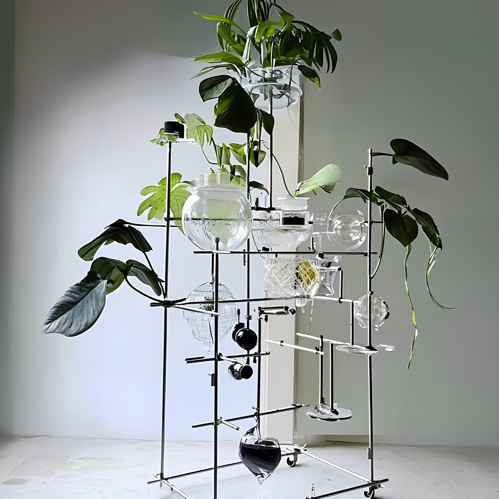
Re-imagining the Plant–Machine Relationship
Ecological Game Field is an interactive installation built on the principle of plant-machine collaboration. Within the system, plants are given the ability to express their own needs — they send "ecological proposals" through the machine.
An AI vision system continuously monitors plant growth indicators via high-precision cameras, transforming biological states into data. When the AI detects an imbalance, a resource allocation mechanism is triggered: light, nutrients, and water are redistributed in a decentralised network, allowing plants to build cooperative relationships within competition.
The machine here is neither tool nor servant. It is a translator and mediator — responding to plant needs while regulating overall ecological balance.
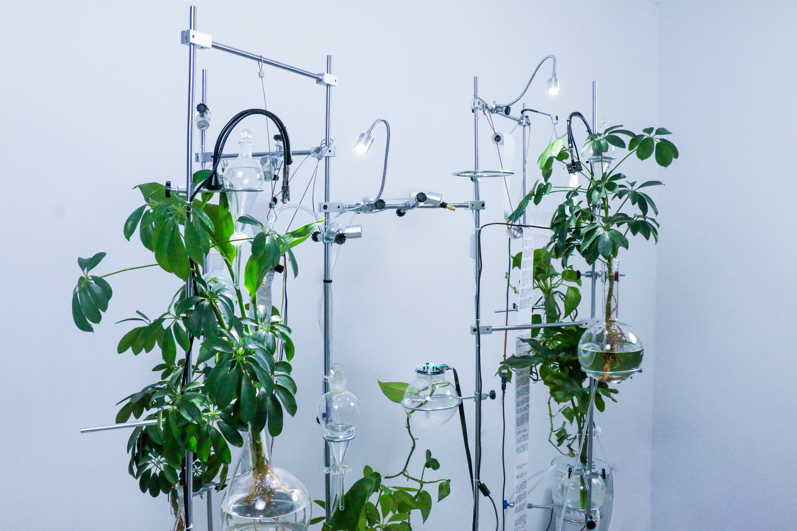
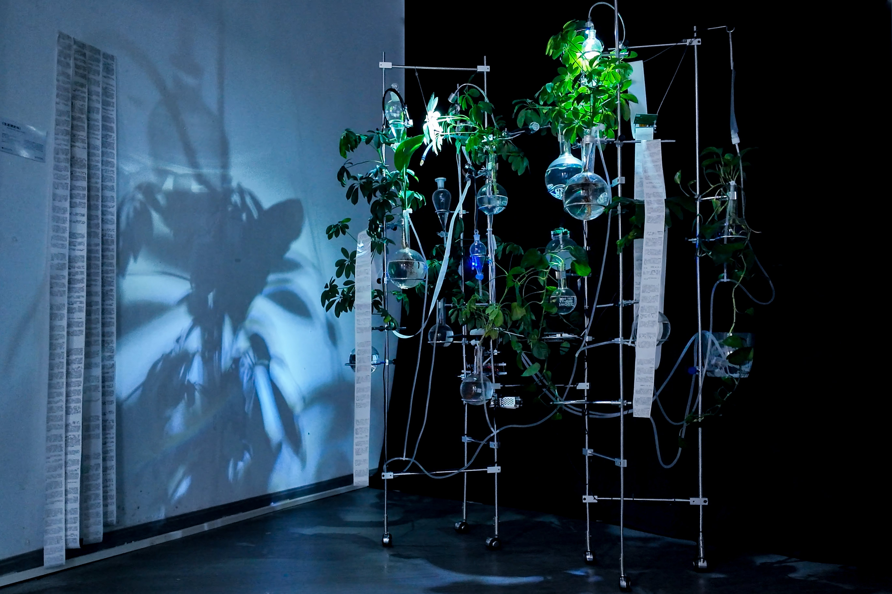

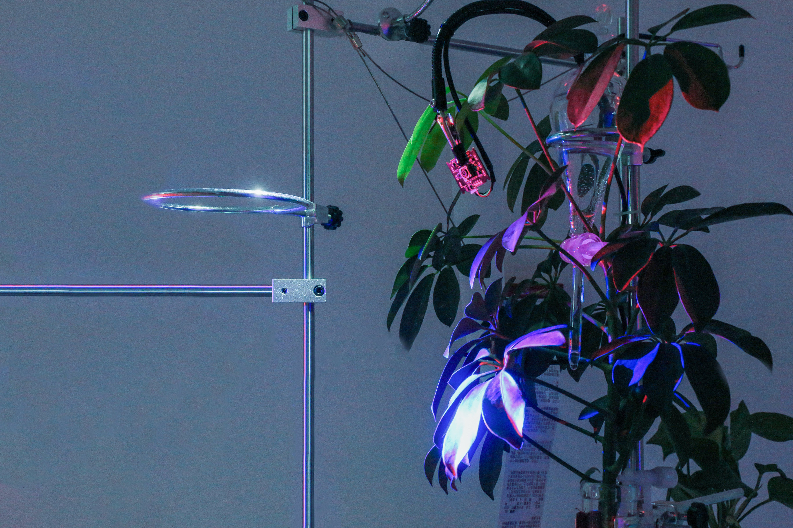
The Machine Breathes
The installation is rarely still. Light shifts. Fluid moves. Resource flows are choreographed by the AI in real time. These short loops capture the system at different moments of negotiation.
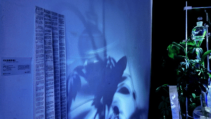
▸ GIF ▸ GIF
▸ GIF
 ▸ GIF
▸ GIF
 ▸ GIF
▸ GIF
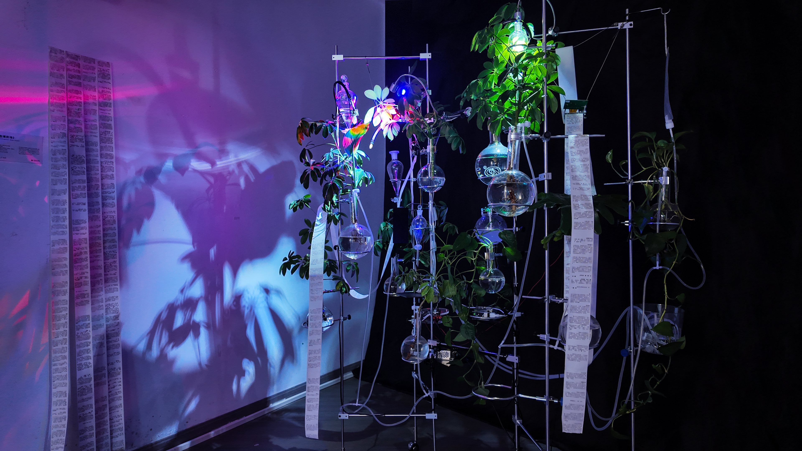
Object-Oriented Design
This work embodies the core principle of object-oriented design: it breaks from human-centric thinking and treats plants and machines as agents with their own intentionality, rather than as passive objects.
The plants are no longer decoration or utility — they become participants whose growth itself constitutes a form of expression. The machine is no longer pure execution of human will — it has limited but real autonomous judgement, acting as an intermediary.

Time Mapping
Plants grow on a slow, cyclical timescale — fundamentally different from human perception or technological time. To bridge this gap, the system uses a multi-layered time-mapping mechanism.
Cameras continuously capture micro-changes in plant form. AI converts these changes into data streams, triggering immediate responses from the lighting and nutrient systems. The plant's slow growth becomes legible at the human scale — without being forced to abandon its own rhythm.


How Light Steers Growth
Before building the installation, we ran a series of experiments to understand how plants respond to controlled light. Two-week-old sunflower seedlings were placed under fixed unilateral light sources to measure their phototropic response.
Within 24 hours, stems bent visibly toward the light — average angles of 1°–2°. After 72 hours, the angle had increased to 4°–8°, with leaves rotating to maximize photosynthetic surface area. When the light source was alternated, plants adapted dynamically, but rotations more frequent than once every 6 hours caused growth disorder.
These data established the safe parameters for AI-driven light modulation — fast enough to engage in negotiation, slow enough not to stress the plant.
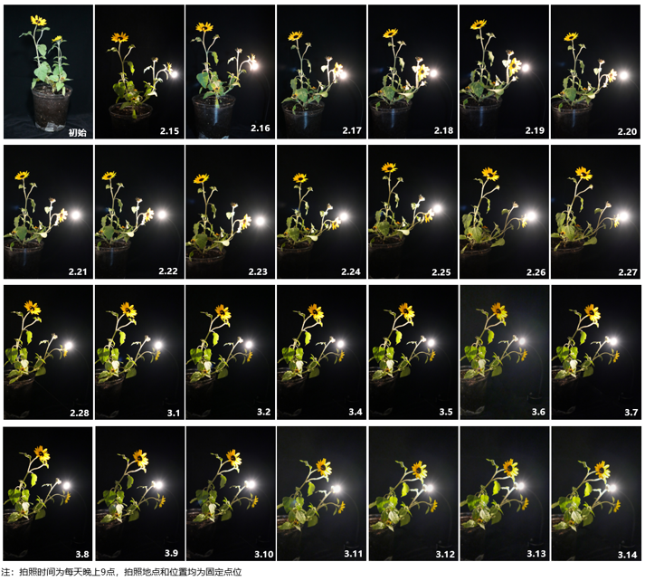
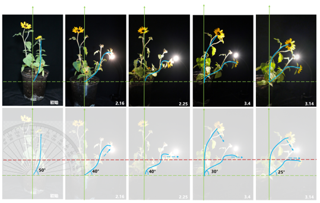
Built Around the Plant
The installation uses transparent materials and a metal frame so that plant growth — including the root system inside round-bottom flasks — remains fully visible. The aesthetic is laboratory-like, deliberately emphasising the experimental and the scientific.
Modular components include: a full-spectrum LED system, plant carriers (round-bottom flasks), nutrient nozzles, transparent water tubing, cameras, a cross-shaped support structure, and a thermal printer that prints the AI's real-time descriptions of plant states.
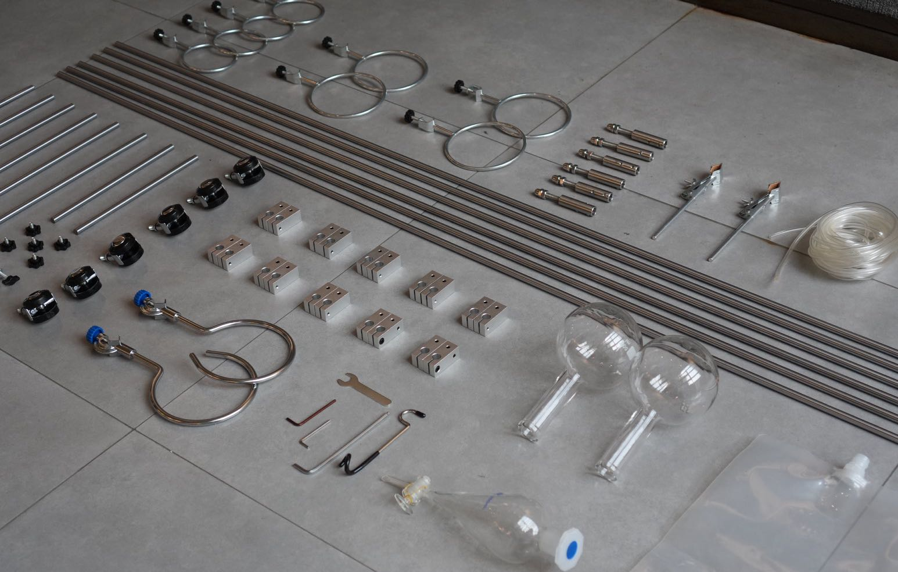
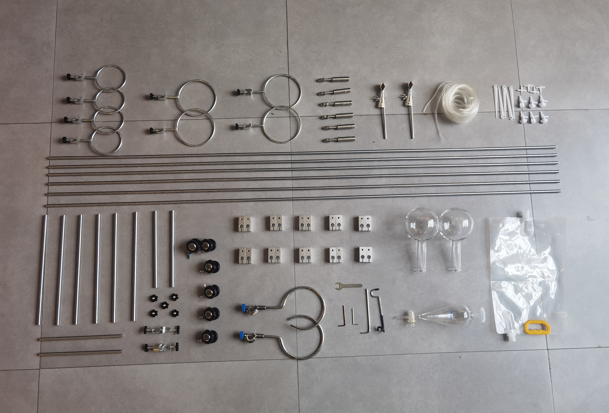
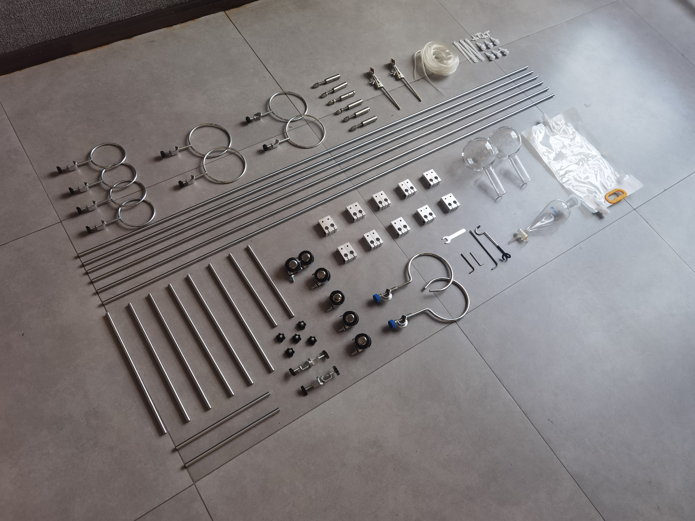
A Tripartite Decision Mechanism
The collaborative decision system has three layers — sensing, AI arbitration, and execution-feedback. Resources are allocated through a "voting" mechanism: every plant has a voice, but final decisions consider collective wellbeing.
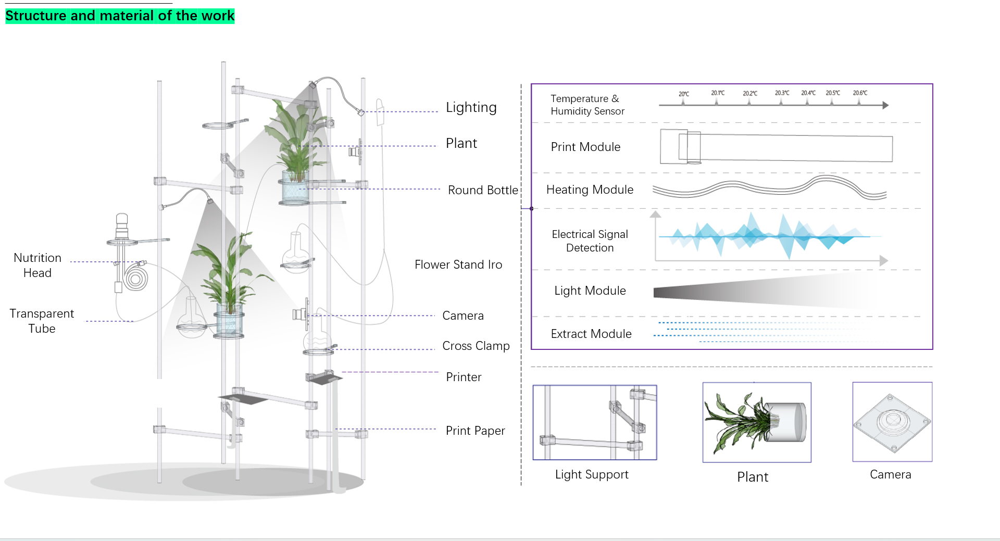
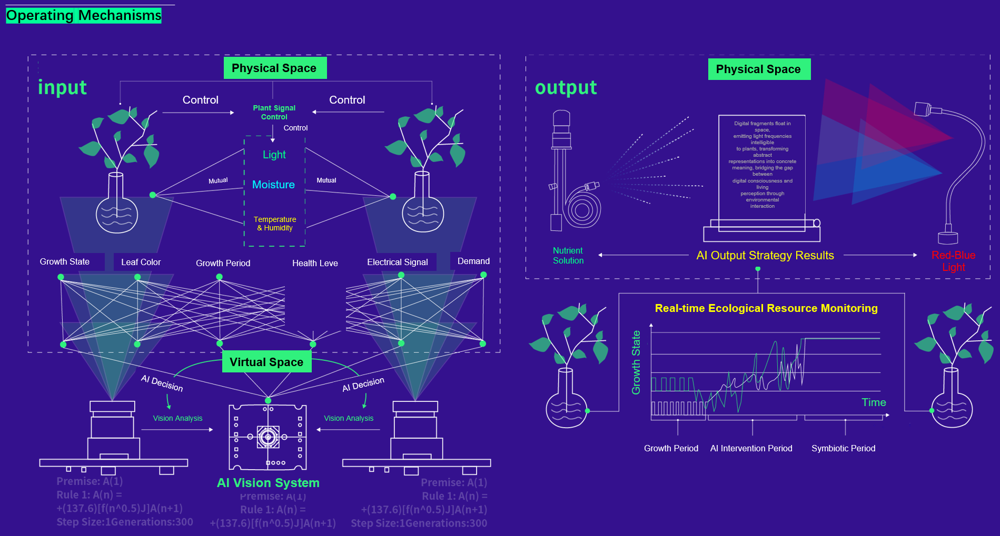
In the Studio
The construction process involved iterative testing of every component — from the geometry of the flask supports, to the precise angle of the LED arrays, to the calibration of the AI vision system.


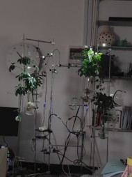
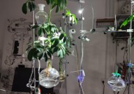


A Field of Multi-Species Negotiation
When AI describes a plant, the description is not a copy of reality — it is a glimpse of how technical media perceives non-human life. When that description is printed onto paper, the plant gains another mode of being: an organic body, then digital information, then a physical text.
The plant is no longer a passive object of observation. Through its symbiosis with the machine, it becomes a subject in artistic practice — its growth, its form, its responses all become driving forces of the system. Ecological Game Field proposes a vision of post-human aesthetics where multi-species negotiation, rather than human dominion, is the foundation of art.
Video
▸ Watch on YouTube
2025 · Documentation